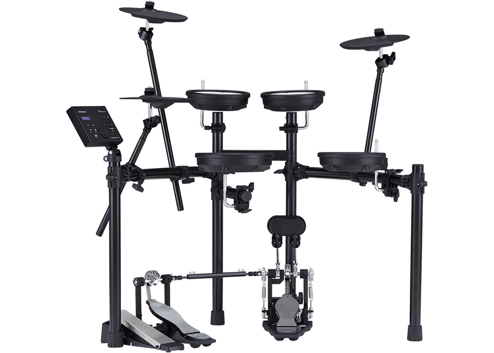
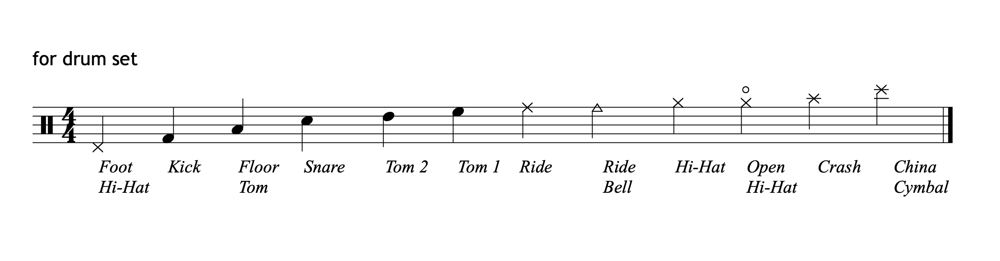
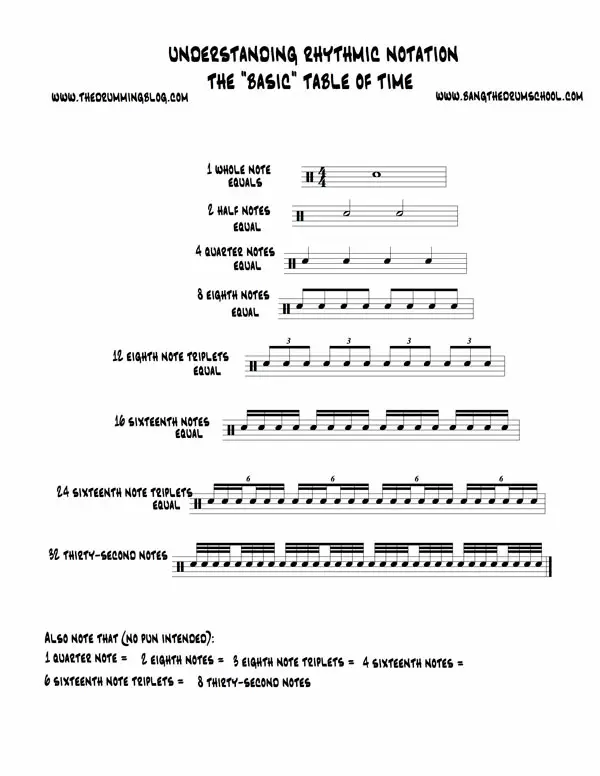
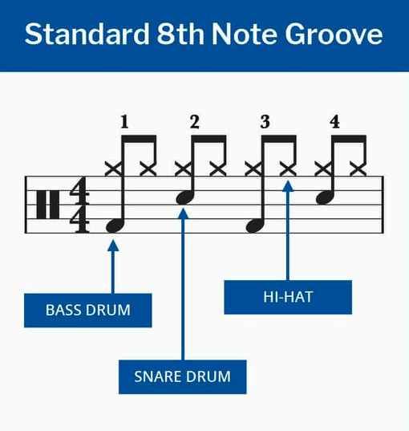

Why to Drum
- Buying Your First Kit
- There are so many kits in the world but here I will give some strong suggestions for Electronic and acoustic kits
Electronic - Roland TD07-DMK
- Simmons Titan 50
- Roland TD-17KVX2
- Acoustic
- DW Collectors Series
- Ludwig BreakBeats
- Yamaha Stage Custom Birch
-
Some Fundamentals to Get Started! - Drum Sheet Notation
- Note Speeds
- Finally once you have your kit you can learn your first beat
Drumming has many benfits physically and mentally
- Physically it's not a bad way to get some movement in as the movements egnage muscles over repetative motion. Especially when engaging into faster music
- Drumming has great benefits to the mind
- It can greatly increase coordination between limbs
- It can release endorphins to improve mood
- Studies have also shown it improves problem solving skills and a good suplement for the brain
this is a good mid range kit with mesh padding for a realistic feel without all the noise. It is MIDI compatable and is a great buy. Here is a link to see a review.

This is a solid entry level kit which has good sound and is space efficient. The quality of the overall kit is lower though so if you are very intersted in drumming spend the money to get a nicer kit
This is a higher end kit which you would probably never need to replace it's got everything you need but the price of the kit and accessories can add up quick make sure to consider the full cost of kit and all the accessories
This will get you everything youb need at top quality

This is a great compact kit with not much to complain about
This is like the DW but a step down. The sound quality is great and it sits a lower price than the DW great buy

This sounds boring but it is really easy and mastering it will make you a better learner
It is different from normal music the best rule is use height. The higher on the kit the higher on the sheet staff
Now that you know the notes of a drum kit how fast should you play them?
This is the key to drumming and what makes it difficult
To make this easier learn the note tree this is a good practice to tell you how often to play notes in 1 segment of music
a quarter note you play 4 times in one segment eighth note 8 times sixteenth 16 times etc. So your job is to equally divide these notes across one segment of music
using this image try to play each bar with your hands on a table or lap you don't even need your Kit all you need to do is set a speed (bpm) and play on
drumming is all about patterns being played on different limbs so our first beat will have 2 different patterns played across 3 limbs
it sounds and feels challenging at first but once you practice it will feel easy
if you master how to hit to keep time try counting 1&2&3&4& each number is 1 BPM and each and is half the time between that so you would be counting in eigth notes which is the speed of the groove
after you feel good try increasing the speed furthur or moving the bass drum on different eigth notes and see how it feels and sounds this is the essence of drumming
Check out the gallery section to check out some more beats and how they should sound
To learn all the way to an expert level without a live instructor I suggest using Drumeo